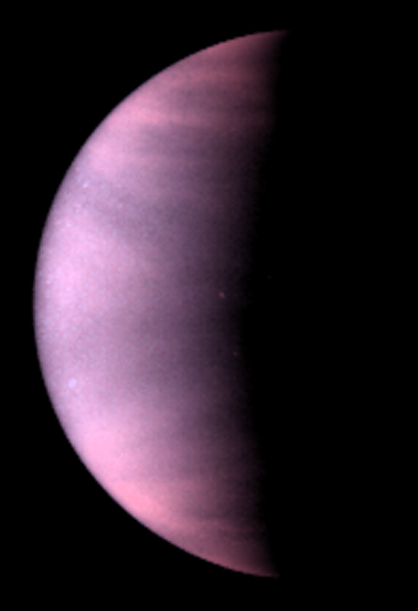

Input: sunlight decreases with distance and is reduced by reflected light.
ASTR 120 · Lecture 06
Atmospheres and Climate
Solar-system evidence, physics, and exploration
Why This Question Matters
The contrast between Venus, Earth, and Mars made climate evolution a planetary science question rather than only an Earth science question.
Learning Goals
- Apply energy balance and atmospheric evidence to compare climates.
- Connect a mission or observation to the physical interpretation.
- Use a quantitative or comparative argument with explicit assumptions.
Opening Phenomenon
Atmospheres regulate temperature, chemistry, escape, weathering, and habitability.
Climate Is an Energy Budget Plus an Atmosphere
Storage: greenhouse gases slow infrared cooling to space.
Loss: low gravity, high temperature, and solar wind can remove atmosphere over time.
Comparative Climate Puzzle
Venus is hotter than Mercury's average surface even though Mercury is closer to the Sun. Mars receives less sunlight than Earth, but its thin atmosphere also provides little greenhouse warming.
Evidence We Need
- Venus, Earth, and Mars have different atmospheric pressures and greenhouse histories.
- Escape depends on gravity, temperature, and molecular mass.
- Albedo changes absorbed solar energy.
Venus: Bright Clouds, Hot Surface
The clouds reflect much of the incoming sunlight, so the surface temperature cannot be explained by solar distance alone. The key evidence is the dense carbon dioxide atmosphere and infrared opacity below the cloud deck.

Absorbed Sunlight Calculation
\[ F_{absorbed}\propto {1-A\over d^2} \]
Using the local climate table, Venus receives 1.91 times Earth's solar flux but reflects about 75 percent. Its absorbed sunlight is roughly 0.25 times 1.91, or 0.48 Earth units, before greenhouse warming is considered.
Worked Comparison: Venus, Earth, Mars
- Venus: effective temperature about 232 K, surface temperature about 737 K, pressure about 92 bar.
- Earth: effective temperature about 255 K, surface temperature about 288 K, pressure about 1 bar.
- Mars: effective and surface temperatures are both near 210 K because the atmosphere is thin.
Atmospheric Escape Boundary
A warm gas on a low-gravity world is easier to lose, but escape speed alone does not decide climate. Atmospheric source rates, magnetic environment, chemistry, impacts, and solar history all matter.
Reasoning Prompt: Why Is Titan Interesting?
Titan receives only about 1 percent of Earth's solar flux but has a surface pressure above Earth's and methane in the atmosphere. Which climate question should come first: energy balance, atmospheric retention, or methane cycling?
Evidence Bridge: Effective Temperature Is a Diagnostic
The gap between effective temperature and surface temperature estimates greenhouse influence. Venus has an enormous gap, Earth has a moderate one, and Mars has almost none in the local climate table.
Synthesis: Compare Inputs, Trapping, and Loss
- Albedo controls how much sunlight is absorbed.
- Greenhouse opacity controls how efficiently a surface cools to space.
- Atmospheric survival depends on gravity, temperature, chemistry, replenishment, and solar forcing.
References and Visual Credits
- OpenStax Astronomy 2e solar-system chapters and local reference copy.
- NASA/OpenStax/ESA sources recorded in reference-log.md where external visuals are used.